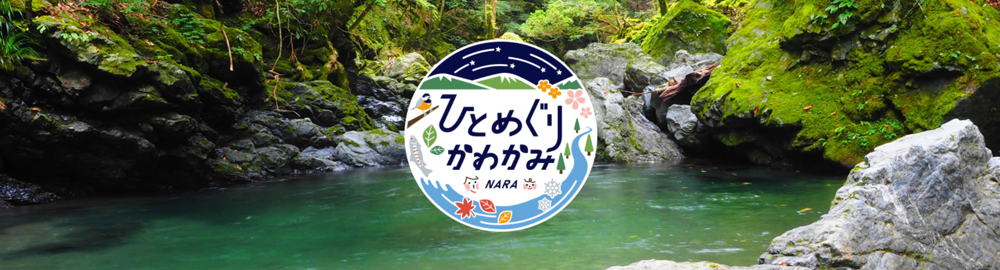
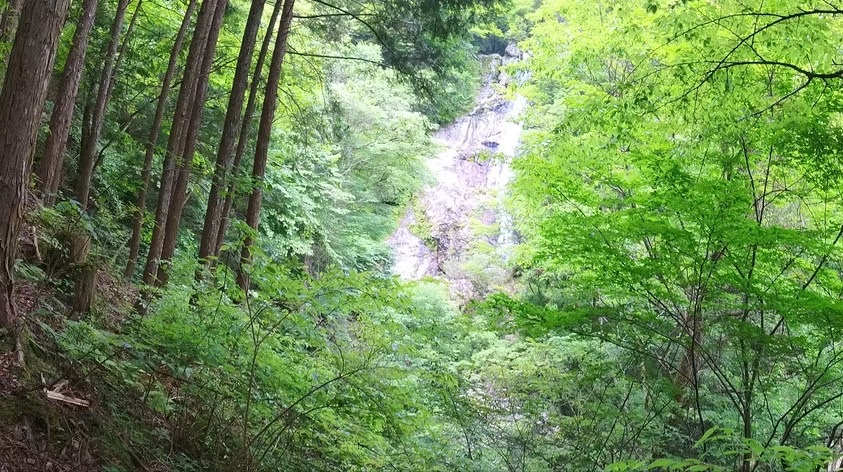
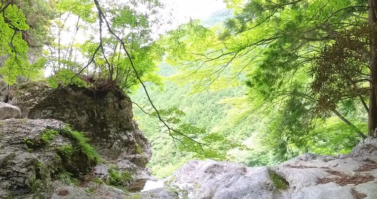
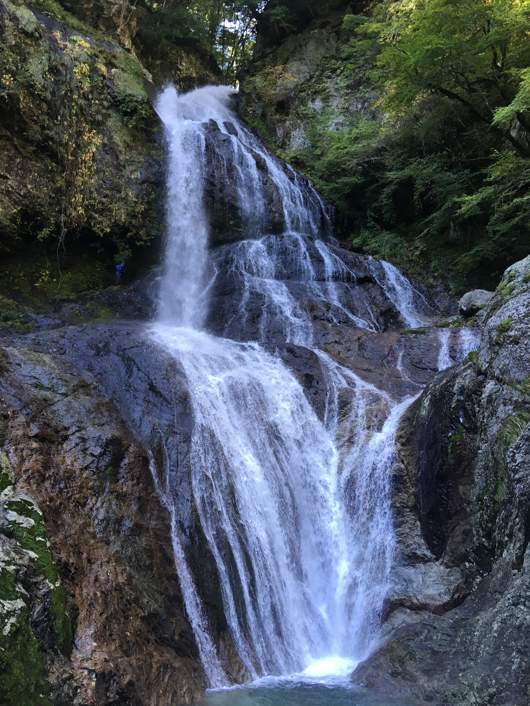

登山コース一覧
おすすめの登山時間帯
川上村登山ツアーでは、以下の時間帯をおすすめします。これらの時間帯は、山の美しい景色と快適な気温を楽しむのに最適です。
9時から12時
早朝の涼しい空気の中で登山を楽しむことができます。日差しが強くなる前に下山できるので、夏場でも快適です。
10時から13時
朝のひとときをゆっくり過ごした後に出発するのに適した時間帯です。登山後、昼食を楽しむのにも最適です。
11時から14時
少し遅めのスタートですが、午後の景色を楽しみながら登山ができます。午後の光が山々を照らす美しい風景を堪能できます。

初級者コース
弁天岩山道入口-琵琶の滝（滝見台） 初級:高さ約50m時間1-1.5時間

中級者コース
弁天岩山道入口-琵琶の滝（頂上） 中級:時間2-2.5時間

上級者コース
上級者コース
弁天岩山道入口-中の滝 上級：時間３-3.5時間
持ち物リスト
・足元をしっかり守るために、グリップ力のある登山靴を選びましょう。
・速乾性・通気性のあるシャツやパンツ、レインウェア、防寒着など、天候の変化に対応できる服装を準備してください。
・十分な量の水と、高エネルギーのスナックや食事を持参しましょう。
・日焼け対策として、日焼け止めクリームや帽子を持参しましょう。
・電波が届かないので紙の地図の持参を推奨します。
"注意喚起"
・コースを応募することで登山届が奈良県警に送信されたことになります
・下山後下山届の送信ご協力お願いいたします。下山したかわからず捜索隊が出る恐れがあります。
・山ヒルが噛まれる恐れがあるため長袖長ズボン着用推奨、ズボンの裾は靴下に入れるとより効果的です。
・ 防虫スプレーの使用、ヒル対策として、防虫スプレーを靴や衣服にしっかりと噴霧しましょう。
・もし遭難した場合は焦らず川、滝の音を聞いて川沿いに下山していきましょう。